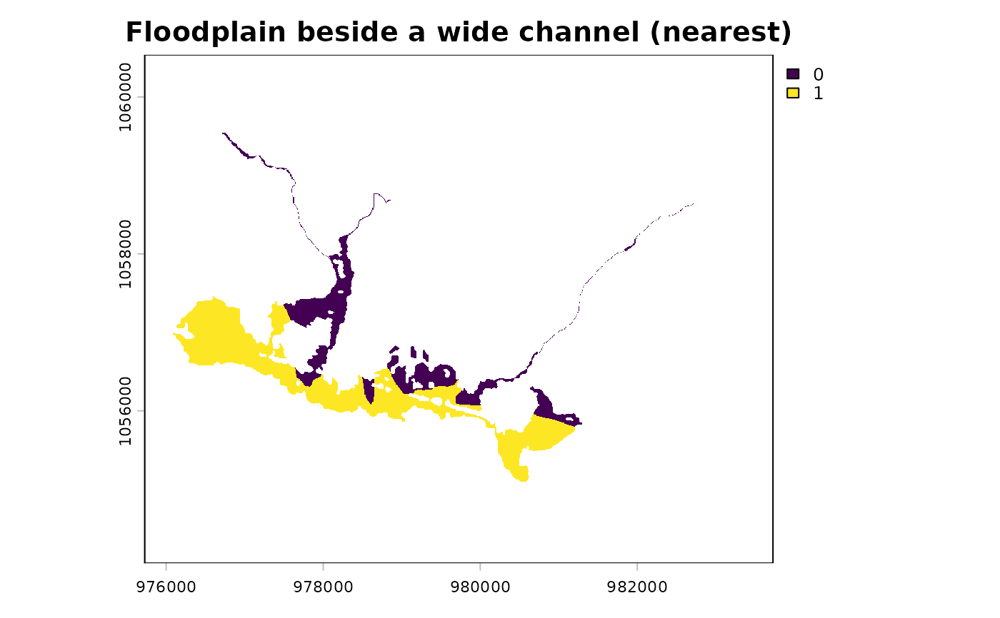

Join per-segment attributes to valley cells by position
Source:R/fl_valley_join.R
fl_valley_join.RdTakes a delineation, its attribution by fl_valley_attribute(), and a set of
stream segments carrying logical attributes (habitat flags, for example), and
gives every valley cell the attributes of the segment beside it. This answers
"which part of the floodplain sits beside segments with attribute X", which a
join on the group key does not.
Arguments
- valleys
A binary (
0/1)SpatRaster, the output offl_valley_confine().- attributed
The
sfoutput offl_valley_attribute()forvalleys, one row per group, in the CRS ofvalleys.- segments
An
sflinestring object carrying thegroupcolumn and the logical attribute columns. Transformed to the CRS ofvalleysif needed; empty geometries are dropped.- group
Character. Name of the group column shared by
attributedandsegments, e.g."blue_line_key". Keys are matched withmatch(), so they must have the same type in both; anNAkey matches theNAgroup. Segments whose key no row ofattributedcarries are ignored.- cols
Character. Names of the logical columns in
segmentsto join. IfNULL(default), every logical column other thangroup. Flags stored as0/1integers needas.logical()first. The nearest-segment search does not depend oncols, so join several flags (several species, say) in one call rather than one call each.
Value
A list:
nearestA data frame with one row per attributed valley cell:
cell(cell index intovalleys), the owning group (a column named aftergroup),dist(map units from the cell centre to the owning segment) and one column per element ofcols. The rule for areas.anyA data frame with one row per attributed valley cell:
celland one column per element ofcols,TRUEwhere any claiming group's nearest segment isTRUE. The "connected to" view.checkNamed integer:
valley_cells,attributed_cells(distinct cells insideattributed),missing(valley cells no group claims) andextra(claimed cells outside the valley). Both of the last two are zero whenattributedcovers the delineation, asfl_valley_attribute(complete = TRUE)does unless no stream cell burns for its fallback (it then reports the cells it left out). The check sees only the union of the claims: a simplified or reprojected copy ofattributedcan move cells between groups and still pass.tiesInteger. Cells whose two nearest claiming groups are exactly equally near.
no_segmentsKeys of claiming groups with no segment in
segments.
Rows of both tables are in cell order.
Details
Each valley cell is claimed by one or more groups (the rows of attributed
it falls inside). For each claiming group, the cell takes the attributes of
that group's segment nearest its centre. Only claiming groups compete: the
nearest segment anywhere can sit on a line the delineation never used (a
stream below a network's order floor, say), and that line's attributes say
nothing about ground it did not shape.
Where several groups claim a cell, there are two answers, and both are returned:
nearestgives the cell one owner, the claiming group whose nearest segment is nearest. Every cell is counted once, so per-group or per-reach areas add up to the floodplain: use it for areas. Exactly equal distances go to the lowest key (numeric order for numbers, C-locale order for text, level order for a factor,NAlast), and the number of such cells is returned asties.anyisTRUEwhere any claiming group's nearest segment isTRUE: ground connected to an attribute through at least one watercourse. A cell can be counted under several groups' flags, so it does not partition.
A nearest TRUE is always an any TRUE.
Joining on the group key instead gives a group's whole floodplain any
attribute found anywhere on it. On the Bulkley watershed group's whole-network
floodplain (30 m, ff04, by blue_line_key) that read 16,705 ha as sockeye
spawning, against 572 ha by position (nearest).
Missing values
A segment's NA is copied as is under nearest, and combined by any()
under any (NA unless a claimer says TRUE). A claiming group with no
segments has nothing to measure from: it never owns a cell another claimer
has segments for, it is left out of any, and a cell only it claims gets
NA attributes, dist = Inf and that group as owner. Such groups are listed
in no_segments.
Valley cells outside every row of attributed (possible with
fl_valley_attribute(complete = FALSE)) get no row, and claimed cells
outside the valley are dropped; either case warns and is counted in check.
A cell is inside a row of attributed when its centre is, so the claims of
an unmodified fl_valley_attribute() output are exactly the cells it
attributed. Duplicate rows for one group count once.
Distances are planar, measured from cell centres with
sf::st_nearest_feature() and sf::st_distance(); a lon/lat valleys is
refused.
Examples
dem <- terra::rast(system.file("testdata/dem.tif", package = "flooded"))
streams <- sf::st_read(
system.file("testdata/streams.gpkg", package = "flooded"),
quiet = TRUE
)
precip_r <- fl_stream_rasterize(streams, dem, field = "map_upstream")
valleys <- fl_valley_confine(dem, streams,
area_field = "upstream_area_ha", precip = precip_r)
attributed <- fl_valley_attribute(valleys, streams, group = "blue_line_key",
dem = dem)
# A per-segment flag: channels wider than 20 m
streams$wide <- !is.na(streams$channel_width) & streams$channel_width > 20
j <- fl_valley_join(valleys, attributed, streams, group = "blue_line_key",
cols = "wide")
#> ℹ 48 cells tied between claiming groups - assigned to the lowest key.
j$check
#> valley_cells attributed_cells missing extra
#> 28727 28727 0 0
# Floodplain beside a wide channel (ha): one owner per cell, then any claimer
cell_ha <- prod(terra::res(valleys)) / 1e4
c(nearest = sum(j$nearest$wide) * cell_ha, any = sum(j$any$wide) * cell_ha)
#> nearest any
#> 190.55 260.82
# Joining on the key instead credits each blue line's whole floodplain
wide_keys <- unique(streams$blue_line_key[streams$wide])
by_key <- terra::cells(valleys, terra::vect(
attributed[attributed$blue_line_key %in% wide_keys, ]
))
length(unique(by_key[, "cell"])) * cell_ha
#> [1] 263.85
# Map it
r <- terra::rast(valleys)
r[j$nearest$cell] <- j$nearest$wide
terra::plot(r, main = "Floodplain beside a wide channel (nearest)")
